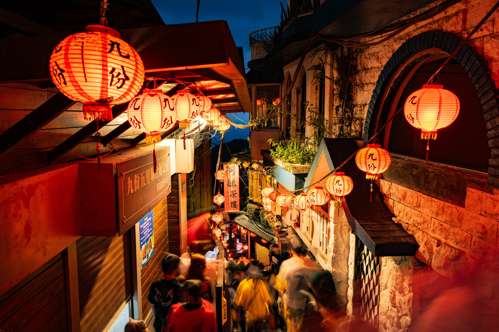
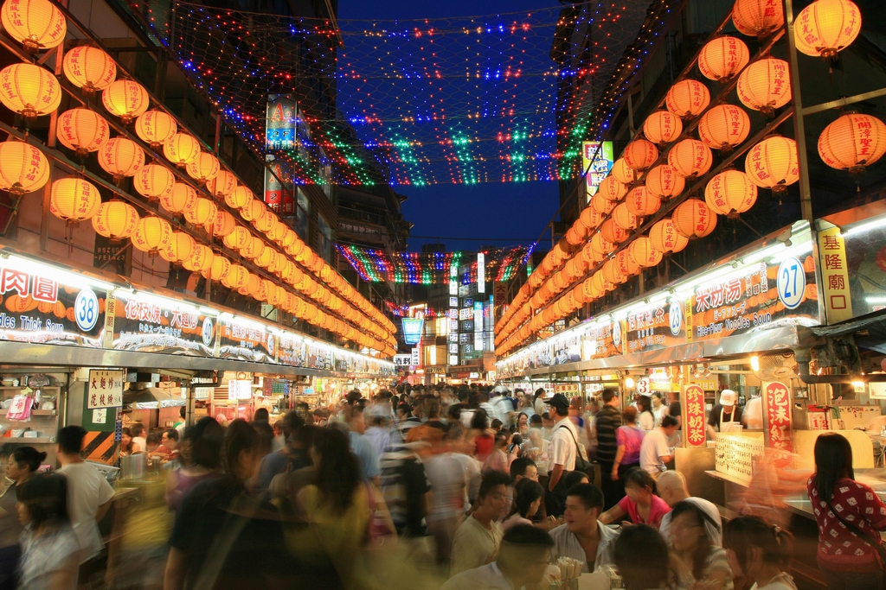

10:00
台北車站會合
於台北車站台鐵剪票口集合，確認悠遊卡／一卡通餘額充足，準備搭乘火車前往瑞芳。
九份山城・基隆海港・台北慢旅
點擊公車與台鐵按鈕可開啟側邊詳細面板
於台北車站台鐵剪票口集合，確認悠遊卡／一卡通餘額充足，準備搭乘火車前往瑞芳。
搭乘台鐵列車由台北車站出發前往瑞芳車站（車程約 40 分鐘）。
抵達瑞芳車站後，跟 蛤、阿琨 會合，並先將大型行李寄放於瑞芳車站，輕裝上九份！
重要提醒：行李房 20:00 前務必領取！
如果是寄放在瑞芳車站的「台鐵行李房」，營業時間只到 20:00，下山後務必於 20:00 前領取！（若使用站內外投幣／電子置物櫃則依櫃位規定）。
🚌 車程與票價：
車程約 15～20 分鐘（假日塞車時可能需 30 分鐘以上），刷悠遊卡或一卡通票價約 15～25 元。
📍 上車地點（重要！）：
公車站牌不在火車站正門口。出瑞芳前站後，請左轉沿著「明燈路三段」步行約 3～5 分鐘（約 200 公尺），在瑞芳警局旁的「區民廣場」公車候車亭排隊上車。
🚏 下車地點：
於「九份老街」站下車即達九份老街入口（7-11 門市旁）。

不趕時間！沿著基山街品嚐芋圓、草仔粿、紅糟肉圓、魚丸伯仔等山城美食，並走訪豎崎路階梯與阿妹茶樓拍照留念。
🍡 點此跳轉查看「AI 推薦美食清單（九份篇）」📍 上車地點：九份老街入口（7-11）斜對面上方的「九份老街」候車亭（往瑞芳方向）。
🚏 下車地點：「瑞芳火車站（區民廣場）」站（下車後右轉步行約 3 分鐘即達火車站大廳）。
⏱️ 車程與票價：約 15 分鐘，刷悠遊卡／一卡通約 15～25 元。
回到瑞芳車站後，先領取寄放的行李（再次提醒：若寄放於台鐵行李房，務必於 20:00 前完成領取）。
拿完行李進站後，往北上（八堵／台北／樹林）方向月台搭車：
1️⃣ 第一段（瑞芳 ➔ 八堵）：
2️⃣ 第二段（八堵 ➔ 基隆）：
走出基隆火車站（南站出口）沿港邊步行約 5～7 分鐘即可抵達「華帥海景飯店」，先辦理 Check-in 放置行李、稍作休息。
🏨 查看華帥海景飯店照片與 Google 地圖導航
從飯店下樓步行約 5 分鐘即達基隆廟口夜市！自由品嚐營養三明治、螃蟹羹油飯、天一香滷肉飯、泡泡冰等美食。
🌙 逛完夜市結束後大家集合，一起散步回飯店休息！
基隆港第一排・下樓走 5 分鐘到廟口夜市
坐落於基隆港畔忠一路／孝二路口，正對海洋廣場與郵輪港灣。從基隆火車站步行約 5～7 分鐘可達，前往基隆廟口夜市也只需步行約 5 分鐘，地理位置極佳！
📍 飯店地址：基隆市仁愛區孝二路 108 號
📞 聯絡電話：(02) 2422-3131
🚶 步行距離：距離基隆火車站（南站）約 450 公尺；距離基隆廟口夜市約 400 公尺。
九份山城・基隆廟口（附攤位號）・台北午餐
手工現做 Q 彈芋圓與地瓜圓！阿柑姨位於豎崎路頂端（九份國小階梯旁），內用區可一邊吃冰／熱芋圓，一邊俯瞰深澳岬角山海美景。
外皮軟糯帶艾草清香，招牌「菜脯米」鹹香夠味、「甜紅豆」綿密不膩，還有芋粿巧也是必買散步點心。
晶瑩剔透的 Q 彈外皮包裹紅糟醃製的豬肉與筍丁，搭配一碗綜合丸湯，是九份吃中餐的好選擇。
必點「古早味套餐」：豆干包（油豆腐鑲肉燥）＋乾冬粉＋魚丸湯，簡單卻超道地。
豎崎路最具代表性的紅燈籠木造茶樓！走累了可以坐下來泡壺台灣高山茶、配茶點，欣賞山城雲霧與海景。
點擊項目即可打勾・進度自動儲存於手機